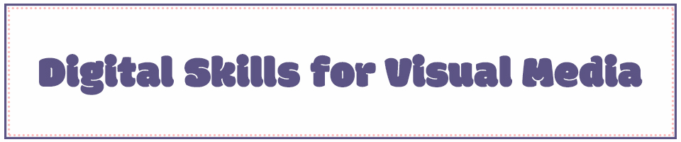

Home | Pixels | Vector | Motion | Print | Contact
Hello! Welcome to my VMD 105 web page!
I am taking VMD 105 to expand my digital skillset and design quality digital art for advertising.
I am using soft, femenine colors in this project to showcase my personal style,
meanwhile adding some funk with my font choices.
Please explore the links above to see my work!